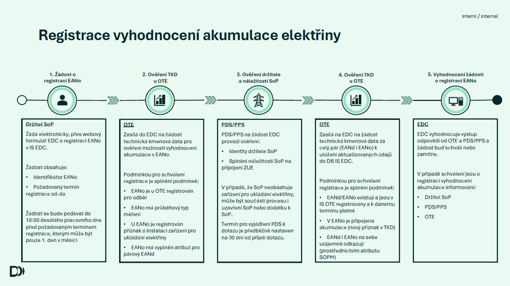
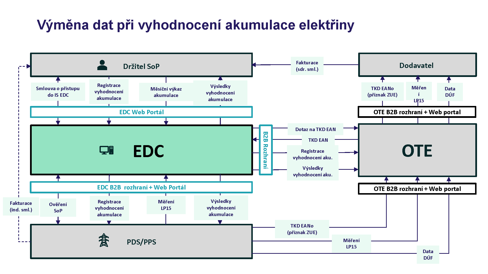

<section class="aktuality">
    <div class="container">
        <h1>Akumulace elektřiny</h1>
        
        <h2>Účel UC akumulace elektřiny</h2>
        <p>Účelem UC akumulace elektřiny je zamezení efektu tzv. double-chargingu, ke kterému dochází při akumulaci elektřiny, když elektřina nabitá do akumulace z DS a následně vrácená do DS podléhá regulovaným platbám jak na straně provozovatele zařízení pro ukládání elektřiny tak na straně konečného spotřebitele.</p>
        <p>Úkolem EDC je stanovení množství akumulované elektřiny tak, aby mohlo být zohledněno ve fakturaci regulovaných plateb. </p>
        <p>Řešení MVP2 bude využívat zjednodušenou tzv. „Hájkovu“ metodu vyhodnocení vycházející z měsíčních hodnot: </p>
        <ul>
            <li>Pro vyhodnocení akumulace bude EDC vycházet z měřených dat fakturačního a podružného měření předávaného formou měsíčního výkazu. </li>
            <li>Vyhodnocení bude EDC provádět po ukončení měsíce ze sumárních hodnot za daný měsíc. </li>
            <li>Vyhodnocení objemu akumulované elektřiny se stanoví dle vzorce: <strong>Množství akumulované elektřiny = max[Dodávka do DS - Výroba v PM; 0]</strong>. </li>
        </ul>

        <br><br/>

        <h2>Povinnosti EDC při zohledňování ukládání elektřiny </h2>
        <p>EDC je povinno:</p>
        <ul>
            <li>Evidovat registrovaná předávací místa pro zohlednění ukládání elektřiny a předávat informace o registraci operátorovi trhu, provozovateli distribuční soustavy a provozovateli zařízení pro ukládání elektřiny, jehož předávací místo je registrované pro zohlednění ukládání elektřiny.</li>
            <li>Zpracovávat naměřené a vyhodnocené údaje o dodávkách a odběrech elektřiny pro zohlednění ukládání elektřiny v předávacím místě; pokud datové centrum zpracovává a vyhodnocuje údaje z podružného měřicího zařízení, zohledňuje ukládání elektřiny v předávacím místě pouze v případě, že jsou výroba elektřiny v předávacím místě nebo dodávky a odběry elektřiny zařízením pro ukládání elektřiny v předávacím místě podružně měřeny stanoveným měřidlem podle zákona o metrologii.</li>
            <li>Poskytovat: 
                <ul>
                    <li>výrobci, provozovateli zařízení pro ukládání elektřiny a zákazníkovi naměřené a vyhodnocené údaje o dodávkách a odběrech elektřiny se zohledněním ukládání elektřiny, </li>
                    <li>operátorovi trhu naměřené a vyhodnocené údaje o dodávkách a odběrech elektřiny se zohledněním ukládání elektřiny a další související údaje a informace nezbytné pro plnění jeho povinností, </li>
                    <li>provozovateli přenosové soustavy naměřené a vyhodnocené údaje o dodávkách a odběrech elektřiny se zohledněním ukládání elektřiny a další údaje nezbytné pro vyúčtování služeb přenosové soustavy a podpůrných služeb a další související informace a údaje nezbytné pro plnění jeho povinností a </li>
                    <li>provozovateli distribuční soustavy naměřené a vyhodnocené údaje o dodávkách a odběrech elektřiny se zohledněním ukládání elektřiny a další údaje nezbytné pro vyúčtování služeb distribuční soustavy a nefrekvenčních podpůrných služeb a další související informace a údaje nezbytné pro plnění jeho povinností. </li>
                </ul>
            </li>
        </ul>

        <br><br/>

        <h2>Okrajové podmínky - akumulace elektřiny </h2>
        <ul>
            <li>Pro prvotní start k 1.8.2026 se nepředpokládá migrace již registrovaných zařízení pro vyhodnocení akumulace u PDS, jejich „převod" do EDC bude zajištěn standardním procesem registrace u EDC obdobně jako u sdílení v bytových domech. </li>
            <li>Vyhodnocení objemu elektřiny odebrané ze soustavy, akumulované a zpětně dodané do soustavy bude provedeno pouze zjednodušeným postupem na bázi měsíčních hodnot (někdy nazýván také jako „Hájkova metoda"). </li>
            <li>Předávání informací z/do EDC bude zajišťováno prostřednictvím držitele SoP bez ohledu na to, zda provozovatelem zařízení akumulace či výrobcem je stejný nebo jiný subjekt. </li>
            <li>Do procesů akumulace elektřiny v EDC nebude žádným způsobem (aktivně, ani informačně) zapojen obchodník v roli dodavatele či subjektu zúčtování, ten bude dostávat až finální podklad pro fakturaci standardním způsobem v DÚF od PDS přes OTE. </li>
            <li>Měření v EANo, ve kterém bude vyhodnocována akumulace, musí být zajištěno průběhovým měřením v souladu s vyhláškou o měření, a to jak v případě fakturačního měření PDS/PPS tak podružného měření výroby. </li>
            <li>Vyhodnocení akumulace elektřiny není navázáno na vyhodnocení sdílení či flexibility, probíhá nezávisle na těchto službách a není tedy nutno omezovat souběh akumulace se sdílením elektřiny či poskytováním flexibility.</li>
        </ul><br><br>

          

        <br><br/>

        <h2>Registrace vyhodnocení akumulace elektřiny</h2>
        <h3>1. Žádost o registraci EANO (Držitel SoP)</h3>
        <ul>
            <li>Žádá elektronicky, přes webový formulář EDC o registraci EANO v IS EDC.</li>
            <li>Žádost obsahuje: Identifikátor EANo, požadovaný termín registrace od-do.</li>
            <li>Žádost se bude podávat do 10:00 desátého pracovního dne před požadovaným termínem registrace, kterým může být pouze 1. den v měsíci.</li>
        </ul>

        <h3>2. Ověření TKD OTE (OTE)</h3>
        <ul>
            <li>Zasílá do EDC na žádost technická kmenová data pro ověření možnosti vyhodnocení akumulace v EANo.</li>
            <li>Podmínkou pro schválení registrace je splnění podmínek: EANo je u OTE registrován pro odběr, EANo má průběhový typ měření, u EANo je registrován příznak o instalaci zařízení pro ukládání elektřiny, EANo má vyplněn atribut pro párový EANd.</li>
        </ul>

        <h3>3. Ověření držitele a náležitostí SoP (PDS/PPS)</h3>
        <ul>
            <li>PDS/PPS na žádost EDC provádí ověření identity držitele SoP a splnění náležitostí SoP na připojení ZUE.</li>
            <li>V případě, že SoP neobsahuje zařízení pro ukládání elektřiny, může být součástí procesu i uzavření SoP nebo dodatku k SoP.</li>
            <li>Termín pro vyjádření PDS k dotazu je předběžně nastaven na 30 dní od přijetí dotazu.</li>
        </ul>

        <h3>4. Ověření TKD OTE (OTE)</h3>
        <ul>
            <li>Zasílá na EDC na žádost technická kmenová data za celý pár (EANd i EANo) k uložení aktualizovaných údajů do DB IS EDC.</li>
            <li>Podmínkou pro schválení registrace je splnění podmínek: EANd/EANo existují a jsou v IS OTE registrovány a k danému termínu platné, v EANo je připojena akumulace (nový příznak v TKD), EANd i EANo na sebe vzájemně odkazují (prostřednictvím atributu SOPM).</li>
        </ul>

        <h3>5. Vyhodnocení žádosti o registraci EANO (EDC)</h3>
        <ul>
            <li>EDC vyhodnocuje výstup odpovědi od OTE a PDS/PPS a žádost buď schválí, nebo zamítne.</li>
            <li>V případě schválení jsou o registraci vyhodnocení akumulace informováni držitel SoP, PDS/PPS a OTE.</li>
        </ul>

        <br><br/>

        <h2>Shrnutí pro provozovatele ZUE / držitel SOP </h2>
        <ul>
            <li><strong>Smlouva o přístupu:</strong> Uzavření smlouvy o přístupu do IS EDC jako vstupní podmínka. </li>
            <li><strong>Registrace:</strong> Registrace EANo pro vyhodnocení akumulace držitelem SoP a splnění náležitostí SoP na připojení ZUE, termín odpovědi 30 dní. </li>
            <li><strong>Průběhové měření:</strong> Zajištění průběhového měření v EANo v souladu s vyhláškou o měření u PDS/PPS. </li>
            <li><strong>Měsíční výkaz:</strong> Zasílání měsíčního výkazu se sumou výroby do EDC od 2. PD do 10. KD nebo 6. PD následujícího měsíce.</li>
            <li>Provozovatel stand-alone akumulace (bez výrobny v PM) nemusí zadávat výkaz. </li>
            <li><strong>Příjem výsledků vyhodnocení:</strong> Získávání údajů o akumulované elektřině od EDC pro vyúčtování služeb DS/PS. </li>
            <li><strong>Ukončení registrace:</strong> Žádost o ukončení registrace elektronicky. </li>
            <li><strong>Nová registrace po 1.8.2026:</strong> Pokud je akumulace již registrována u PDS, nutná nová registrace v EDC (nepřevádí se automaticky). </li>
        </ul>

        <br><br/>

        <h2>Výměna dat při vyhodnocení akumulace elektřiny</h2>
        <ul>
            <li><strong>Držitel SoP:</strong> Vyřizuje Smlouvu o přístupu do IS EDC, zajišťuje registraci vyhodnocení akumulace a předává měsíční výkaz akumulace prostřednictvím EDC Web Portálu. Následně získává výsledky vyhodnocení pro další fakturaci.</li>
            <li><strong>EDC:</strong> Komunikuje s OTE a PDS/PPS prostřednictvím B2B rozhraní. Od PDS/PPS a OTE přijímá měření (LP15) a technická kmenová data (TKD EAN). Následně zpracovává a odesílá výsledky vyhodnocení a data pro DÚF (Doklad o Uplatnění Flexibility/Fakturaci).</li>
            <li><strong>PDS/PPS:</strong> Ověřuje Smlouvu o připojení (SoP), zprostředkovává průběhové měření (LP15) a řeší dotazy na technická kmenová data (TKD s příznakem ZUE).</li>
            <li><strong>OTE:</strong> Eviduje technická kmenová data (TKD EANO s příznakem ZUE) a přijímá od EDC výsledky vyhodnocení (Data DÚF).</li>
        </ul><br><br>

         <br>
    </div>
</section>
